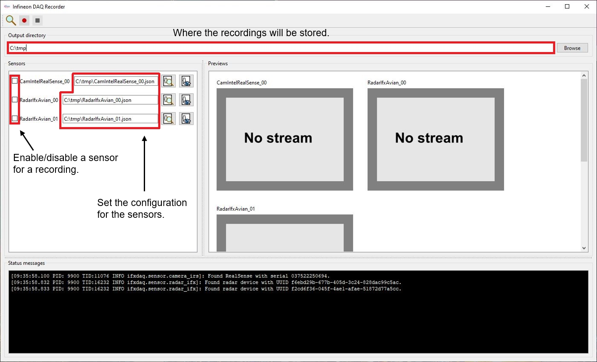

Recorder
We provide a recorder tool to record data with sensors that are supported by ifxdaq.
It can be started from the commandline (after you installed ifxdaq):
ifxdaq recorder

Button |
Functionality |
|---|---|
|
Discover connected devices. |
Start the recording. The window might freeze for a short time - this is a known limitation. |
|
Stop the recording. |
|
|
Open a file dialog to select sensor configurations. |
View the current sensor configuration. |


Command line help
If you want to enable specific options, you find them within the -h/--help menu:
ifxdaq recorder --help
Usage: ifxdaq recorder [OPTIONS]
Recorder tool.
Options:
--config-file PATH Configuration file. [default: config.yaml]
--vis / --no-vis Enable visualizations. (Warning: This can lead to frame drops.) [default: vis]
--webcam / --no-webcam Enable webcams. (Warning: This can cause side effects on other cameras used.)
[default: no-webcam]
--log-level [DEBUG|INFO|WARN|ERROR]
Log level. [default: INFO]
-h, --help Show this message and exit. [default: False]